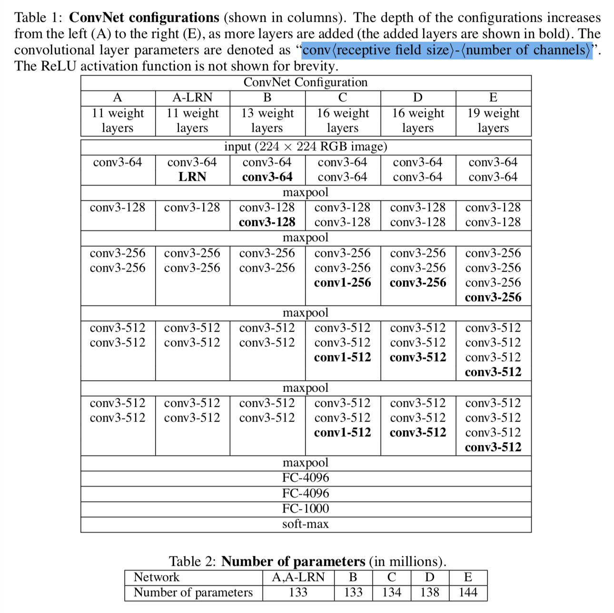

Abstract
这篇论文探究了在大规模的图像识别场景中，CNN 网络的深度对其准确率的影响。论文中，作者使用了一个足以捕获空域信息的最小 conv filter (3x3) 来减少参数数量，并逐渐增加网络的深度。于是有了这样的发现：当深度加深时，模型的准确度有着显著的提高，甚至超过了当时的最佳水平。并且，这种小卷积核、大深度的网络有着很好的泛化能力，在其他领域也有着很不错的表现。
Sec1: Introduction
已经出现过两种尝试提升准确度的方向：
- 改进原始模型 Krizhevsky et al. (2012) 的架构
- training and testing the networks densely over the whole image and over multiple scales Sermanet et al., 2014; Howard, 2014
这篇论文里重点探究网络深度的影响（方法：固定其他参数(如 FC 层数)，通过增加 conv layers 的方式逐渐增加网络深度）
作者提供了几个表现最好的模型，不过是 caffe 用的。作者在这里还放出了许多 matlab 的版本，可以用 scipy.io.loadmat(path) 的方法在 Python 里导入。
Sec2: ConvNet Configurations
2.1 Architecture
训练过程中，输入均是 224x224 的 RGB 格式图片，唯一的预处理是减去 RGB 的均值。
设计这个架构的主要思路是，先让图片通过一堆卷积层，然后再通过三层 FC 层，最后那层是一个 1000 channels 的 softmax。激活函数一致选用 ReLU。
在卷积层中，将会使用很小的感知域/卷积核（3x3 是足以感知上下、左右、中心点等概念的最小尺寸）。在其中一个实验中，作者还尝试了 1x1 的卷积核，这(单指这次卷积操作)可以视为对输入的线性变换（注意后边的 max-pooling 依然是非线性的）。所有 conv 层的 padding 设置都基于不让空间的解析度发生变化这一目的（保持 224x224）。部分 conv 层后会接上 max-pooling，performed over a 2x2 pixel windows with stride 2.
2.2 Configurations
见下表，每个模型按列展示，conv 层命名格式为 conv⟨receptive field size⟩-⟨number of channels⟩。其中，LRN 是 Local Response Normalisation 的意思，作者试了一下感觉没用，所以后边就不加这个了。

2.3 Discussion
作者还论证了一下自己的模型比 ILSVRC-2012, 2013 中最好的模型还牛批。不仅参数减少了（归功于卷积核 3x3 的大小），准确度也提升了。
3 层的 3x3 conv layers 就相当于有了 7x7 的感知域，但是引入了三层非线性的变换，这使得 3x3 与 7x7 的模型相比，增加了模型的判别能力（discriminative，不知道怎么翻译合适），还减少了参数的数量 (from $49C^2$ to $27C^2$)
小卷积核的思路在其他人的论文里已经出现过了，但是他们的模型深度没有 vgg 的深，也没有在大规模数据集上进行评估。或者是拓扑结构比 vgg 的复杂。总结：vgg 牛批！=。=
Sec3: Classification Framework
训练方法：带动量的 mini-batch 梯度下降
- batch_size = 256
- momentum = 0.9
- regularization_penalty =
$5*10^{-4}$(L2) - dropout_ratio = 0.5
- learning_rate =
$10^{-2}$(decresed by a factor of 10 gradually)
作者说网络的权重初始化很重要，一不小心就可能造成梯度的不稳定。为了避免这个问题，作者从 A 网络(见上边的表)开始训练，这个网络足够浅，随机地进行初始化就行了。在训练其他更深的网络时，前四层 conv layers 跟最后的三层 FC layers 会以训练完毕的网络 A 中对应的参数值进行初始化，其他中间层则随机进行即可。这些“预初始化”的模型保持原始的 learning_rate 参数，不会因为已经进行过“预初始化”而减小初始学习率。
进行随机初始化时，$X \sim N(0, 10^{-2})$ while $b = 0$。
为了得到固定大小 (224x224) 的图片，训练集中的图片被放缩后进行随机的切割。为了扩充训练集，这些“切片”还经过了随机的水平翻转与 RGB 颜色变换。
论文中剩下的部分我没怎么看懂……先跳过
最后论文说在 ILSVRC 里，他们用的是 7 个模型的融合(fusion)，没有细看，方法是 averaging their soft-max class posteriors。
之后回炉重新看的时候再补充。